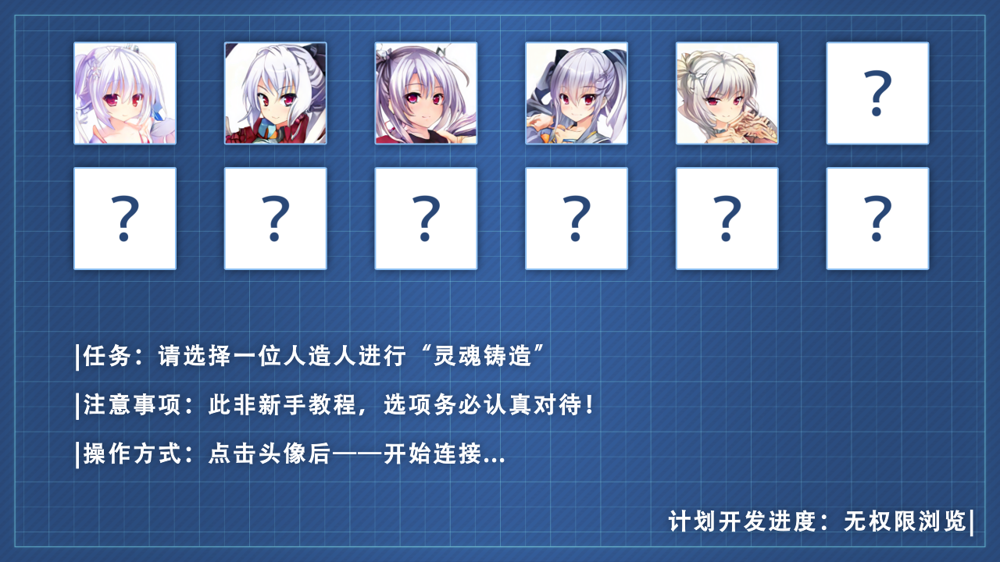
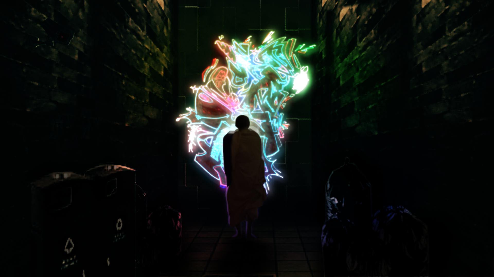

- Recent -

- 部分游戏 -
|  |  |
《灵魂铸造师》游戏设计主角作为Eden公司（也就是类机械人制造公司）的一名中层的员工，具体而言——是负责人造人这块的工程师。要说的话，公司的高层主要都是负责管理各种企划和业务，几乎不参与主要的“制作”工作。而这样的主角被公司上级调动至新的项目——“皮格马利翁”计划 “皮格马利翁”计划中，男主将通过“游戏”的形式，给公司生产的人造人赋予灵魂，铸造师铸造人时候需要写铸造日记，记录对铸造的研究，日记都会按照时间顺序调整，编辑者也可以自己写“铸造指南”来帮助接手的铸造师来进行铸造。 参与铸造的不只有主角一个人，在铸造的过程中，主角发现有些项目内的员工“消失”了。起初并没有太在意，但在一次看到铸造日记中不同寻常的日记后...... |
《灵魂铸造师》后传——《彼岸的皮格马利翁》
R君来到了人们所生活的现代都市里。不适应新环境的他接受了V小姐的帮助，被其收留了。 都市中的飞驰的机车与灯红酒绿的高楼大厦尽管在他看来十分神奇，但更令他惊奇的是这个世界是靠幻象运行起来的，常人对于幻象的渴求程度居然超过了真实的感知 V小姐不仅是个热爱游戏的人，还是一名拥有众多粉丝的虚拟主播，R君却不断想让都市里的人们回归现实。最后在都市的经历中他最终发现了自己才是真正的幻象。他只是V小姐喜欢的游戏里设定的一个角色而已，是V小姐为了适应现实生活所订制的类机械人，但是虚幻的他也想将热爱真实的能力教给现代人们，在消失和虚幻之间他选择了... |